Armenia
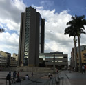
Armenia, es una ciudad ubicada en el centro del departamento del Quindío en pleno corazón cafetero de Colombia, es caracterizada por sus vistas rurales, las cuales hacen parte del paisaje cultural cafetero, la hace ideal para largas caminatas o descansar un rato de la ajetreada vida citadina; Su clima templado la hace perfecta para salir a recorrer los municipios aledaños.
Podrás encontrar todo tipo de actividades para hacer, centros comerciales, una emocionante vida nocturna, entre otros, en su estadio “el estadio Centenario” milita como local el deportes Quindio, un equipo de fútbol tradicional del balompié Colombiano, que actualmente participa en la división B de Colombia
Calarcá
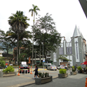
Calarcá es el segundo municipio más grande del departamento del Quindío, está rodeada por exuberantes montañas, hace parte del paisaje cultural cafetero; Se le conoce por ser la puerta de entrada al eje cafetero, posee dos corregimientos Barcelona y La Virginia, su nombre viene derivado del legendario cacique Calarcá; Al municipio se le conoce como La Villa del Cacique; también Cuna de Poetas, por sus reconocidos autores, como Luis Vidales o Baudilio Montoya, por ello la ciudad es sede del Encuentro Nacional de Escritores.
Rodeada de exuberantes montañas y colinas, Calarcá ofrece un entorno pintoresco con una rica herencia cafetera y una vibrante cultura local.
Barcelona
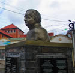
Barcelona, es una pequeña y apacible localidad que destaca por su belleza natural y su ambiente tranquilo. Rodeada de montañas y vegetación exuberante, Barcelona ofrece a sus visitantes un entorno ideal para el descanso y la conexión con la naturaleza.
Sus calles pintorescas y su arquitectura típica de la región cafetera colombiana brindan un encanto rural único. Gracias a esto es un destino atractivo para aquellos que buscan alejarse del ajetreo de la vida urbana y disfrutar de la serenidad de la zona cafetera de Colombia.
Salento
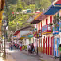
Salento, también conocido como el municipio padre del Quindío esto gracias a que es el municipio más antigüo del departamento, se caracteriza por sus pintorescas calles, coloniales fachadas y paisaje rodeado de montañas, hace parte del paisaje cultural cafetero.
Uno de sus más grandes atractivos es el Valle Del Cocora, lugar en el cual se encuentra el árbol nacional de Colombia la Palma de Cera, además de eso destacan el Parque de los Nevados y el Mirador Alto de la Cruz desde el cual se puede contemplar el Valle de Cocora.
Filandia
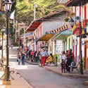
Filandia es un pequeño pueblo al norte del departamento del Quindío, caracterizado por sus pintorescas fachadas y su plaza principal la cual es el corazón del poblado, está rodeada por comercios, restaurantes cafés y tiendas de souvenirs, sus dos mayores atractivos turísticos son el mirador colina iluminada y la reserva Barbas Bremen.
Sus actividades económicas principales son el turismo, las tiendas de café y la fabricación de canastas de mimbre.
Circasia
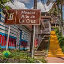
Circasia es un pintoresco municipio al norte del Quindío, este se destaca por su clima templado y su parque central el cual está rodeado por restaurantes y tiendas de café, sus casas tienen un aspecto colonial y pintoresco lo cual le otorga un ambiente acogedor, además de eso se encuentra rodeada por fincas de café.
Buenavista
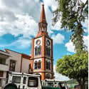
Buenavista es un municipio del departamento del Quindío, esta rodeado por exhuberantes montañas y frondosos valles, este se caracteriza por sus espectaculares vistas no solo del resto del departamento si no del norte de Valle.
La cultura del café es fundamental en la vida de este municipio, con numerosas fincas cafeteras que permiten a los visitantes explorar y aprender sobre el proceso de producción del café colombiano. Además, la iglesia local, que refleja la rica historia y la influencia cultural de la región, es un punto de referencia importante en el pueblo.
Cordoba
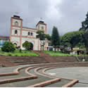
Cordoba es un encantador pueblo que se caracteriza por su ambiente tranquilo y su belleza natural. Rodeado de montañas y campos verdes, Córdoba ofrece un paisaje pintoresco que atrae a quienes buscan un escape de la vida urbana.
La arquitectura de Córdoba refleja su historia colonial, con calles adoquinadas y casas de estilo tradicional que le dan un aspecto nostálgico. El pueblo es conocido por su hospitalidad y su comunidad acogedora que se enorgullece de su cultura y tradiciones locales.
Además, Córdoba se encuentra en la región cafetera de Colombia, lo que significa que los visitantes pueden explorar fincas cercanas para conocer de cerca el proceso de cultivo y producción del café, una parte importante de la vida en esta área.
Pijao
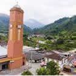
Pijao es un pintoresco pueblo que se caracteriza por su ambiente tranquilo y su belleza natural. Rodeado de montañas y paisajes exuberantes, Pijao ofrece una escapada serena de la vida urbana.
La arquitectura de Pijao refleja su rica historia colonial, con calles adoquinadas y casas de estilo tradicional que crean una atmósfera nostálgica. El pueblo es conocido por su hospitalidad y la calidez de su comunidad, que se enorgullece de sus tradiciones y cultura locales.
La tebaida
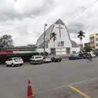
La Tebaida se encuentra en la región cafetera del país y es conocido por su belleza natural y su papel en la producción de café de alta calidad.
La Tebaida cuenta con una arquitectura tradicional y encantadora, con calles adoquinadas y casas coloridas que le otorgan un ambiente pintoresco. Además, la iglesia local es un punto de referencia importante que refleja la rica historia y la influencia cultural de la región.
Dentro de sus alrededores, los visitantes pueden explorar fincas cafeteras cercanas para aprender sobre el proceso de cultivo y producción del café colombiano, lo que añade un componente educativo y cultural a la visita.
Montenegro
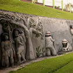
Montenegro se caracteriza por su arquitectura colonial bien conservada, con calles adoquinadas y casas de colores vibrantes que le dan un aspecto pintoresco y alegre. La plaza principal es un punto focal del municipio, rodeada de restaurantes, tiendas de artesanías y cafeterías, creando un ambiente acogedor y animado.
La cultura del café es una parte integral de la vida en Montenegro. Los visitantes tienen la oportunidad de explorar fincas cafeteras cercanas para aprender sobre el proceso de cultivo y producción del café colombiano, desde la cosecha de los granos hasta la preparación de la taza perfecta.
Quimbaya
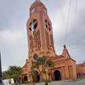
Quimbaya es un municipio ubicado en el departamento de Quindío, Colombia.
Es conocido por su arquitectura colonial, casas de colores vibrantes y calles adoquinadas que le dan un aspecto pintoresco.La cultura del café es esencial en Quimbaya, donde los visitantes pueden explorar fincas cercanas y aprender sobre el proceso de cultivo y producción del café colombiano.
La región también ofrece belleza natural con montañas, ríos y vegetación exuberante, lo que la convierte en un lugar propicio para actividades al aire libre. La comunidad local es hospitalaria y se enorgullece de sus tradiciones culturales, lo que brinda a los visitantes la oportunidad de experimentar la autenticidad de la vida en Quimbaya.
Génova
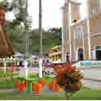
Además de la cultura del café, la región ofrece oportunidades para actividades al aire libre, como el senderismo y el ciclismo, gracias a su belleza natural y sus montañas escénicas.
El clima fresco de Génova a lo largo del año lo hace especialmente atractivo para aquellos que buscan escapar del calor. La comunidad local es hospitalaria y mantiene vivas sus tradiciones culturales, lo que permite a los visitantes experimentar la autenticidad de la vida en Génova.
Copyright © 2018 - All Rights Reserved - VisitaQuindio
Template by OS Templates